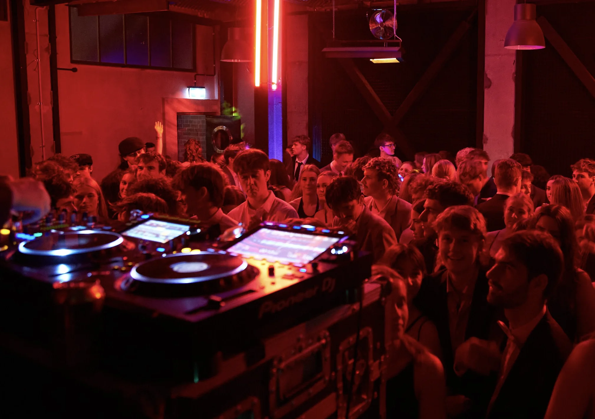

A good DJ makes the night. Not just someone pressing play on a playlist, but someone who knows how to build energy, read a crowd, and keep things moving from the first song to the last. That's what we bring.
Our DJs have played school balls, weddings, corporate functions, private parties, and festival stages across Canterbury and beyond. They turn up with the right music for your crowd, a professional setup, and the experience to handle whatever the night throws at them.

An experienced DJ who knows how to work a crowd. They'll play to the room, handle requests, and keep the energy right from start to finish. Genre-flexible and happy to work with your playlist or vibe.
Every DJ hire comes with a sound system sized for your venue. Tops and subs for dance floors, or a smaller PA for cocktail settings. We set it up, sound check it, and make sure it sounds right in the room.
Pioneer DJ CDJ-3000s and DJM mixer, proper booth or facade, and monitoring. Clean setup that looks as good as it sounds. LED front panels available for balls and events where the booth is a centrepiece.
Ball season is our bread and butter. We know what students want to hear, how to structure the night around speeches and awards, and when to turn it up. Full production packages with lighting available.
Ceremony music, dinner background, and dance floor sets. We keep it classy during the formalities and bring the energy when it's time to party. Happy to work with your must-play and do-not-play lists.
Birthdays, engagements, 21sts, corporate end-of-years, house parties. Whatever the occasion, we bring the DJ, the sound, and the vibe. Packages start smaller for intimate events and scale up from there.

If you've got your own DJ sorted and just need the gear, check out our DJ backline hire page. We hire out CDJ-3000s, CDJ-2000NXS2s, DJM-A9 and DJM-900NXS2 mixers, plus our custom CDJ sun cover for outdoor gigs. All with pricing listed.
We have a practice studio at our warehouse set up with CDJ-3000s and a mixer. $50+GST per session. Great for set prep, practice, or getting comfortable on the gear before a gig. Book through unit20.nz.
Tell us the date, venue, and what kind of event it is. We'll match you with the right DJ and put a package together.
Get in touch or call 021 178 0355.
Both. This page is for hiring a DJ (the person plus the full setup). If you already have a DJ and just need the gear, head to our DJ backline hire page.
A DJ, sound system (PA with subs), CDJs and mixer, booth or facade, and all cabling. We deliver, set up, the DJ plays all night, and we pack down after. Lighting add-ons available.
Absolutely. Send through a must-play list and a do-not-play list and the DJ will work around them. They'll also read the room and fill in the gaps with music that fits the vibe.
It depends on the event type, duration, and what's included in the package. Get in touch with the details and we'll quote it up.
All Ears Events Limited
20 Southwark Street, Sydenham, Christchurch 8023
021 178 0355 · hello@allears.nz
Mon-Fri 9am-5pm